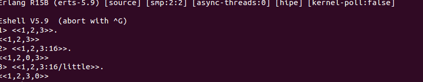

记得第一天来实习的时候,我师傅给我展示了一个命令
然后耍下一句话:"erlang中的数字是没有大小限制的,它取决于你的内存"
当时我就斯巴达了,完全就是这个表情
后来才明白上面的意思(bsl是bit shift left,上面是将1左移2000位,相当于2^2000方).
erlang中对位数据的处理很简单高效,这也是为什么erlang非常适合开往网络应用,因为套接字传来的都是二进制流.
位语法基本格式
<<Value>>
<<Value:Size>>
<<Value/TypeSpecifierList>>
<<Value:Size/TypeSpecifierList>>
##构造
- Value是数值,可以是数,也可以是变量,也可以是返回值为数的表达式,同时也可以是文本串.
- Size给Value分配N个
type类型的空间,Size为type默认数值的整数倍,type未指定时为integer.此时size默认为8 - TypeSpecifierList是
Type-Signedess-Endianess-Unit的形式,- Type可以为
integer,float,binary,bytes,bitstring,bits,utf8,utf16,utf32.其中bytes是binary的缩写bits是bitstring的缩写. - Signedess可以是
signed和unsigned,只有type为integer时有效 - Endianess可以为
big,little,native,这个类似于大端和小端存储的概念,默认是big,native是让程序在运行时根据计算机决定使用哪种方式. - Uint:形式通常是
<<Value:Size/unit:integer>>,integer的范围是1~256.系统会给Value分配Size X integer的空间.
- Type可以为

上面是简单的二进制流构造,不过位语法的最大用处不在构造,而是erlang中无处不在的matching,模式匹配.
##模式匹配
Color = 16#32F682.
我们在上面定义了一个Color变量,这时我们常见的16进制色彩数据,玩过ps的人应该经常遇到.假如我们需要提取出Color中的RGB分量各是多少,应该怎么做呢?
这在erlang中非常容易:
如上所见,我们用R匹配Color前8位,G匹配中间8位,B匹配最后8位.那么R,G,B就是Color的红色,绿色和蓝色分量了.
如果只需要红色,我们可以用
/binary放在末尾可以匹配剩下的所有二进制流,但是需要注意的是/binary只有放在末尾才可以不指定size.
需要注意的是
binary与默认integer的size的差别,integer默认是8,binary的1其实相当于占用integer的8一样的空间.而且binary的返回值不再是整数,而是一个二进制流.

如上是TCP的报文格式,我们可以用模式匹配轻松得到这些数据.
<<SourcePort:16, DestinationPort:16,PosNumber:32,AckNumber:32,DataOffset:4, _Reserved:4, Flags:8, WindowSize:16,CheckSum: 16, UrgentPointer:16,Payload/binary>> = TcpPackage.
先到这,改天想起来在补充.
参考:
learn you some erlang
Erlang官方文档
（http://www.cnblogs.com/me-sa/archive/2011/12/25/erlang0024.html）
（http://www.cnblogs.com/zhongwencool/p/erlang_binary.html）